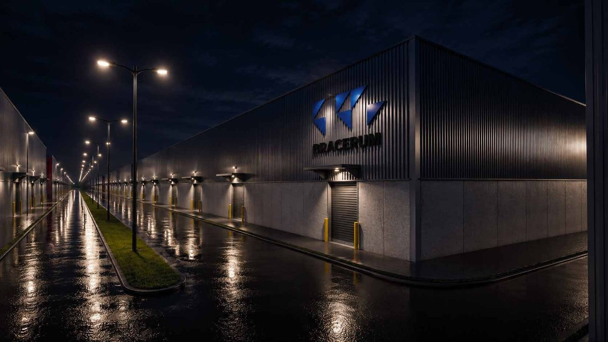
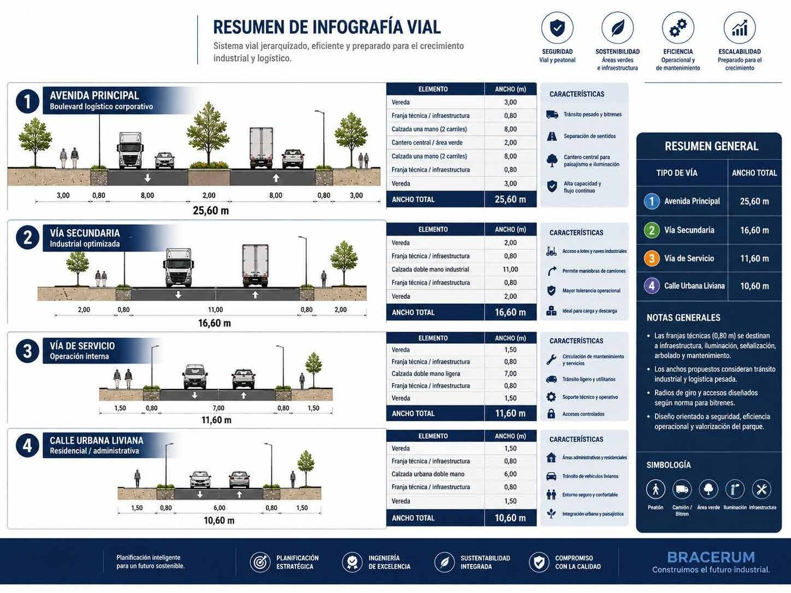
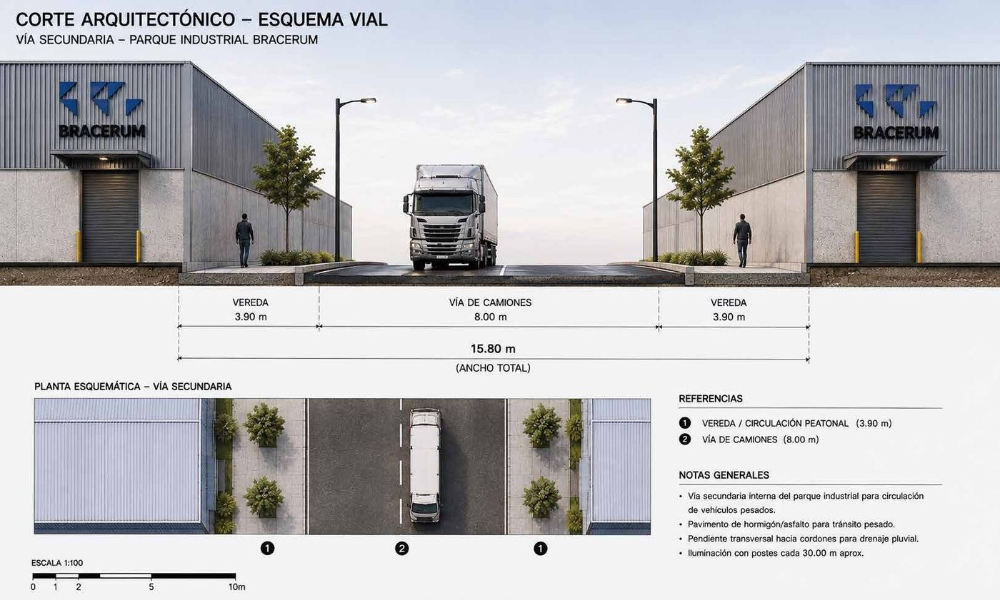
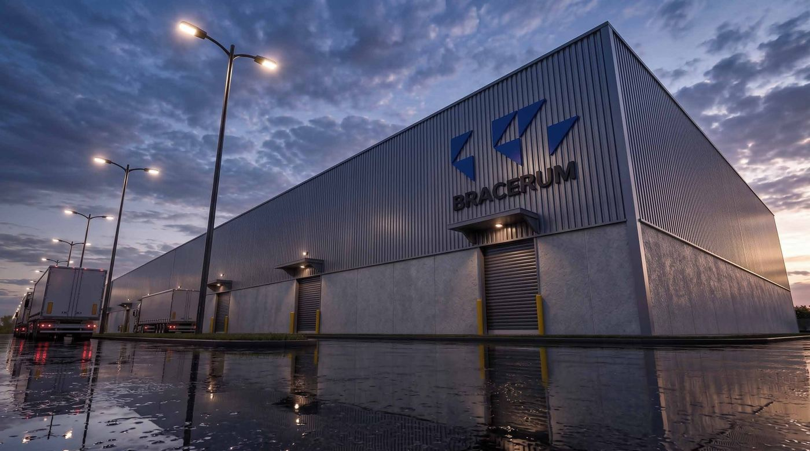
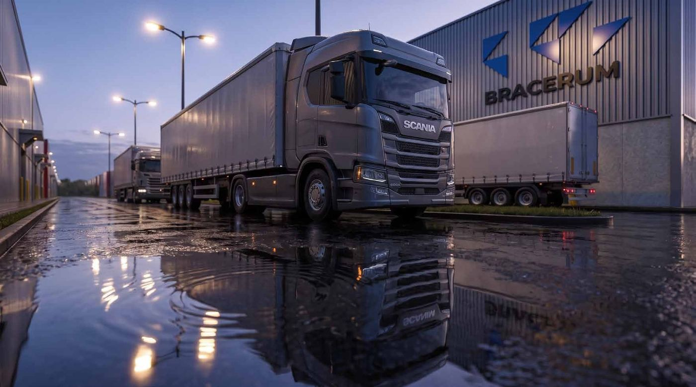
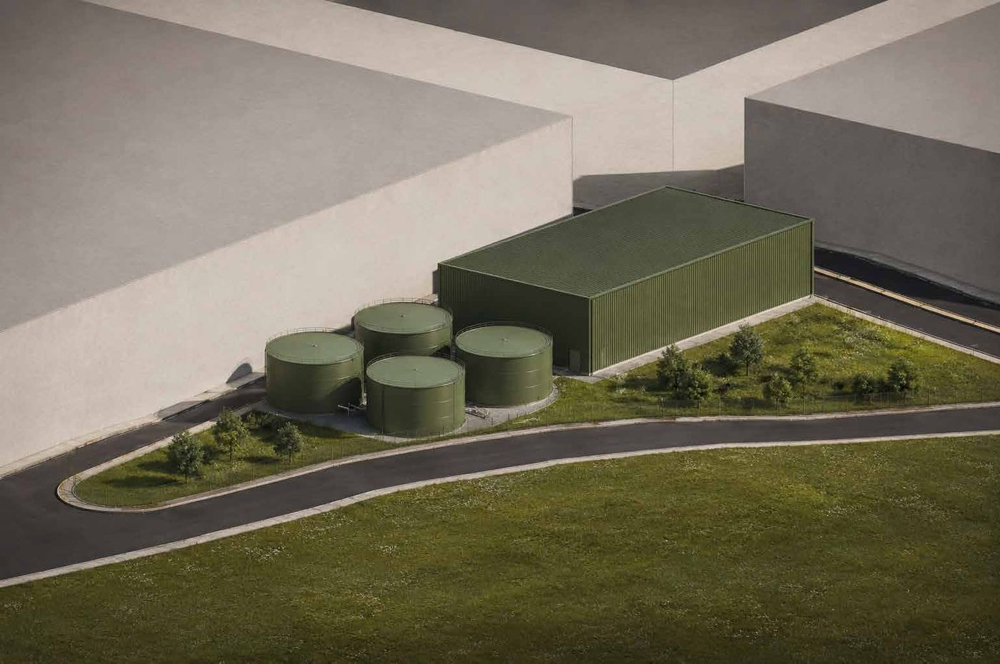
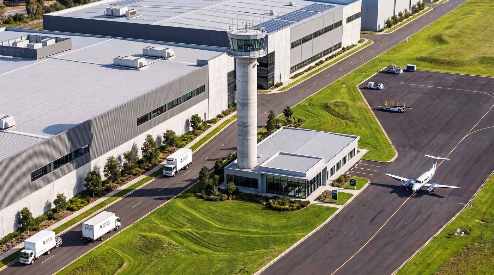

Drenagem
Infraestrutura verde e azul
Redução das superfícies impermeáveis com infraestrutura verde e drenagem urbana controlada, com áreas de retenção dentro do masterplan.
Select your language · Escolha seu idioma · Elija su idioma

Qualidade de construção
Hierarquia viária dimensionada para bitrem, faixa técnica arborizada, drenagem por cordões e iluminação a cada 30 m. O que sustenta a operação todos os dias.
O sistema viário é hierarquizado: não é uma malha genérica repetida pelo terreno. Cada categoria tem largura, pavimento e raio de giro dimensionados para o veículo que vai usá-la.
As faixas técnicas de 0,80 m que acompanham cada via não são sobra de projeto: é onde ficam a infraestrutura enterrada, a iluminação, a sinalização e a arborização. É o que permite manutenção sem quebrar pavimento.

Na via secundária, a seção total de 15,80 m distribui 8,00 m de pista de caminhões entre duas veredas de 3,90 m. O pavimento é de concreto ou asfalto para trânsito pesado.
A declividade transversal joga a água para os cordões, que fazem a drenagem pluvial — não há poça no meio da pista de manobra. A iluminação é em postes a cada 30 m aproximadamente, o que elimina o trecho escuro entre luminárias.

Áreas verdes e drenagem
As estratégias de sustentabilidade do masterplan R04 não são um capítulo à parte: elas mudam a cota do terreno, o pavimento e o consumo de energia do parque.
Drenagem
Redução das superfícies impermeáveis com infraestrutura verde e drenagem urbana controlada, com áreas de retenção dentro do masterplan.
Água
Sistema de captação e uso de águas pluviais para irrigação, limpeza e usos operativos secundários.
Terreno
Implantação adaptada à topografia natural, minimizando movimento de solo e a relação entre arquitetura e paisagem.
Microclima
Vegetação e paisagismo para controle climático, sombra e melhora do microclima urbano, integrados às faixas técnicas das vias.
Energia
Luminárias LED de alta eficiência com sensores inteligentes e integração BMS de automação e monitoramento energético nas áreas comuns.
Fachada
Brises, beirais profundos e envolventes arquitetônicas para reduzir a carga térmica nas fachadas expostas.
A via secundária tem 11,00 m de pista dupla industrial justamente para o caminhão manobrar sem invadir a vereda nem parar o fluxo da avenida principal. É a diferença entre um pátio que funciona e um que trava às seis da tarde.
O pátio de apoio ao caminhoneiro é um setor próprio do masterplan, com área de descanso, refeitório, vestiários e enfermaria — o motorista descansa dentro do parque, não no acostamento da rodovia.
Ver o Bracerum Select →



